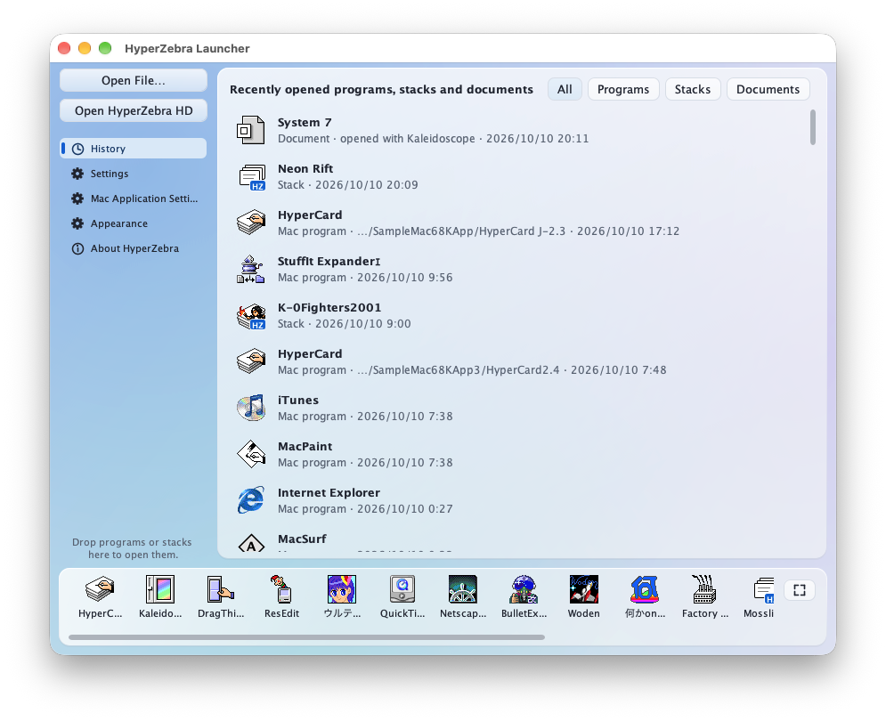
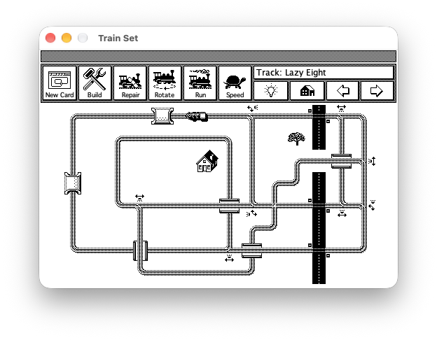
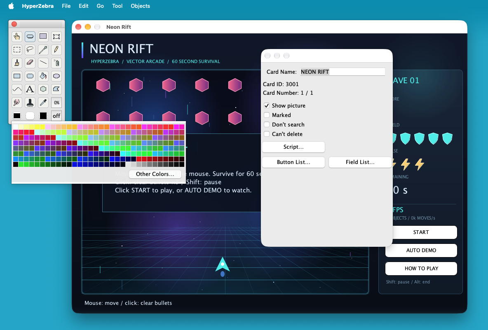
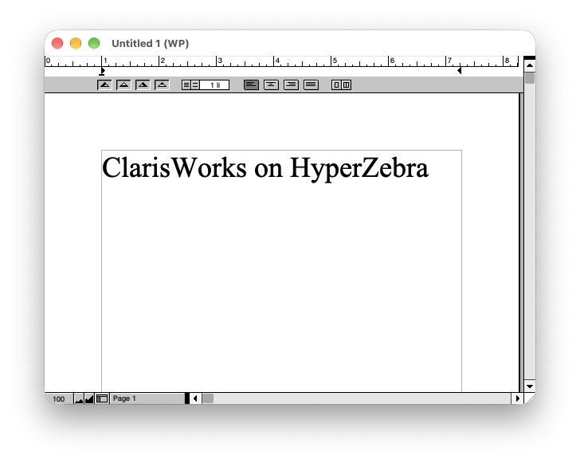
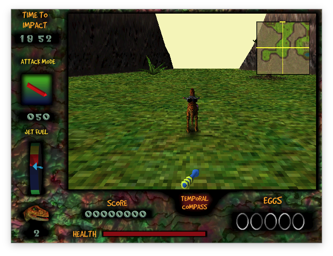

HyperZebra
HyperCard stacks and classic Mac applications, on today’s computers.
Open HyperCard stacks to browse, edit, and run them. HyperZebra also runs classic Mac 68K and PowerPC applications, with no Mac ROM or Mac OS required.
For macOS, Windows, and Linux, free of charge. Opens the download page on GitHub Releases.
HyperZebra is an unofficial compatibility environment. It is not affiliated with Apple Inc. and is not developed, endorsed, or supported by Apple Inc.

What it does
-

Open HyperCard stacks
Import old stacks, browse their cards, and run their HyperTalk scripts and external commands.
-

Create with color and shapes
Build stacks with features HyperCard did not have, such as color painting, editable shapes, and panels. Shown: “Neon Rift,” a game made with shapes and HyperTalk.
-

Run classic Mac applications
Run 68K and PowerPC applications made for Mac OS 9 and earlier. No Mac ROM or Mac OS installation is needed.
-

Play 3D games too
Games that use QuickDraw 3D or OpenGL run as well. Screen size, color depth, and speed can be set for each application.
Getting started
- DownloadGet the file for your OS from GitHub Releases and extract it.
- Open a fileDrop a stack or an application onto the launcher that appears when HyperZebra starts. You can also drop archive and disk image files directly onto it.
Frequently asked questions
The details and things to watch out for are here. Select a question to read its answer.
Basics
What is this?
It combines an environment for importing, browsing, editing, and running HyperCard stacks with a compatibility environment for running classic Mac applications.
Which operating systems can I use?
macOS (Apple silicon and Intel), Windows (64-bit), Linux, and other systems that run Java. The macOS and Windows packages include a Java runtime, so no separate Java installation is needed. On Linux and other systems, use the jar package with Java 17 or later.
Is it free to use?
Yes. HyperZebra is free to download and use. Its source code is published on GitHub under the MIT License. Stacks and classic Mac applications have their own terms of use and distribution.
How do I open files?
HyperZebra starts with a launcher. Choose “Open File…” or drop a stack or an application onto the window. You can reopen files from the history and add frequently used ones to the dock at the bottom.
Can I change the language or the display size?
Choose the interface language in the settings: English, Japanese, German, French, Spanish, Italian, Portuguese, Korean, and Simplified or Traditional Chinese. Cards and application screens can also be zoomed.
Is there detailed documentation?
“HyperZebra Help,” available from the launcher’s Help menu, explains stack import, editing, the HyperTalk extensions, and the Mac application compatibility environment in English and Japanese.
What should I watch out for when moving old Mac files?
Some classic Mac files have a resource fork that holds program code, pictures, sounds, or other information separately from the regular data. Preserve it when moving files, including to Windows or Linux. Without it, a file may fail to open or some of its contents may be missing.
HyperZebra supports MacBinary, BinHex, and resource information stored in ._filename sidecar files.
HyperCard stacks
Can I open HyperCard stacks I made years ago?
You can import HyperCard-format stacks, display their cards and pictures, and edit them. Japanese and other non-English stacks are read with their text encoding detected. HyperTalk and external commands (XCMDs and XFCNs) are supported, but compatibility is not complete and depends on the features a stack uses.
How are edited stacks saved?
When you open a HyperCard stack, it is converted into a HyperZebra stack and saved as a single .hzb file beside the original. Open that file for later work. It opens with a double-click and can be copied or sent like any other document. .hzb files made by earlier versions still open.
You can also export in HyperCard format, but HyperZebra-only features such as color do not carry over. Keep both the original stack and the working .hzb file.
Are there features that HyperCard did not have?
- Color painting with layers
- Editable shapes such as rectangles, ellipses, polygons, curves, and text, with color, gradients, opacity, and rotation; SVG files can be imported as shapes
- Panels, which group parts and can hold their own data and scripts
- Fields that show their contents as tables or outlines
- HyperTalk arrays and dictionaries, web text retrieval, JSON, and regular expressions
- A resource editor for icons, cursors, sounds, and other resources
Can I write and debug scripts?
The script editor points out errors as you type, includes a command and function reference, and has a debugger that can pause execution and inspect variables. Stepping through a script helps connect each statement to what happens on screen.
What can I make?
You can make picture books, quizzes, and simple games. There is no feature for turning a stack into a standalone application or exporting it to the web.
Classic Mac applications
How does it work?
HyperZebra emulates 68K and PowerPC CPU instructions and handles the Mac Toolbox and system-library calls that applications make (windows, menus, drawing, sound, file operations, and more) on the host OS. Unlike conventional Mac emulators, it does not boot a complete classic Mac OS.
Do I need a Mac ROM or a classic Mac OS installation?
No. HyperZebra provides the Mac services needed to run applications without booting a complete classic Mac OS installation. Some applications may still require additional extensions or libraries.
What kinds of applications can run?
The compatibility layer targets 68K and PowerPC applications made for Mac OS 9 and earlier. Compatibility varies with the application, its version, and the features used. Applications that require unsupported system services or direct hardware access may have problems starting, displaying content, or responding to input. Even when an application starts, check features such as editing and saving individually.
What does not run?
Applications that require Mac OS X do not run. Many system extensions also cannot run because of how they interact with the system.
Which OS version is running?
Classic Mac OS itself is not running. To accommodate software that checks the OS version, HyperZebra reports “9.2.2,” the final version of Mac OS 9, when applications ask. This is a compatibility response; it does not mean that Mac OS 9.2.2 has been booted.
What if the display is too small, colors look wrong, or an application runs too fast?
Use Application Settings to adjust screen size, color depth, zoom, and execution speed. Settings are saved per application, so games and productivity applications can use different configurations. Restart an application after changing settings that take effect at launch.
Are 3D games supported?
HyperZebra includes compatibility implementations of QuickDraw 3D, RAVE, and OpenGL 1.2.1 for classic Mac 3D games that use them. Rendering is performed in software inside HyperZebra. Compatibility and speed depend on the game’s features and the performance of the host computer.
Can movies be played?
Movie playback depends on the format. Some movies use built-in decoders; others use FFmpeg on the host OS or QuickTime (version 4 and earlier) inside the compatibility environment. See the application’s help for details.
Can I copy and paste text and pictures to and from my computer?
Text and pictures can be exchanged through the host OS clipboard. Supported text and image files can also be converted, with settings for saving UTF-8 text and PNG images. Application-specific document formats depend on the application.
Can I open disk images of old floppies and CDs?
You can open supported disk images, including Disk Copy formats and HFS, HFS Plus, MFS, and ISO volumes. Applications can access their contents as read-only disks. Extract the contents to a folder if you need to modify them.
Can I open StuffIt and other archives?
Drop a StuffIt, Compact Pro, or LHA archive onto the launcher. HyperZebra then runs a classic expander application from its download package inside the compatibility environment to extract the archive.
Can I use extensions and control panels?
Some supported extensions and control panels can be used. HyperZebra has a virtual “System Folder” for extensions and preference files. Whether a particular component works depends on the system services it requires.
Can I add fonts?
Yes. Place supported classic Mac font suitcases in the “Fonts” folder inside the virtual “System Folder.” Bitmap fonts and TrueType fonts contained in suitcases are supported. Preserve the resource forks when copying old fonts.
Can I change the appearance?
You can change the appearance of windows, scrollbars, and buttons with Kaleidoscope.
Development
How was HyperZebra developed?
I started from the HyperCard clone I had been developing around 2012 and asked AI to continue its development. Most of the current core features were developed by AI.
Which AI did you use?
I started with GPT-5.6 Sol, then mainly used Opus 5 and Opus 5.5.
What was your development process?
I kept asking AI to implement features as I thought of them. For larger features, I mainly broke the work into pieces the AI could implement and had it work through them in order. To improve compatibility, I also had AI run a large number of HyperCard stacks and classic Mac applications.
Where is the source code?
It is published in the GitHub repository under the MIT License. HyperZebra is written in Java and builds with the JDK alone.